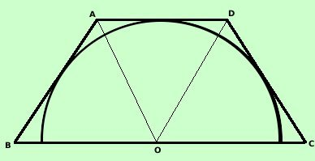
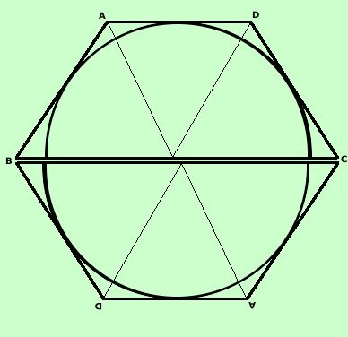
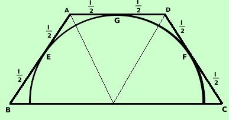
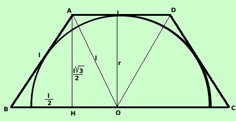
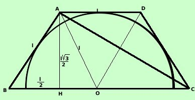
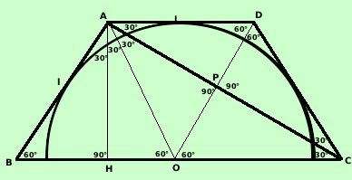

Trapezio isoscele con lato obliquo congruente alla base minore
Veramente nei libri di testo questo esempio non l'ho mai
visto, pero' siccome ho trovato nella mia carriera tanti problemi che si
basavano su di esso, penso che meriti di essere considerato fra gli altri
casi

Considero un trapezio isoscele in cui il lato obliquo sia congruente alla base
minore:

La figura corrisponde a meta' dell'esagono regolare circoscritto alla
circonferenza: e pertanto potremo basarci su di essa per discuterla:
infatti
se considero il trapezio
isoscele con lato obliquo congruente alla base minore e lo "ribalto" attorno
alla base maggiore ottengo un esagono regolare
quasi regolare: colpa mia! Non sono troppo preciso nel
disegno

Una proprieta' abbastanza interessante e' data dal fatto che i segmenti di
tangente condotti da un puunto esterno ad una circonferenza sono fra loro
congruenti, quindi, avremo che i lati obliqui e la base minore del trapezio
sono suddivisi a meta' dal punto di tangenza al cerchio:
BE = EA = AG = GD = DF = FC = l/2
In genere posso considerare tre tipi di problemi:
- Dato il valore del lato obliquo risolvere il trapezio

Supponiamo di conoscere il valore l del lato obliquo
AB = CD = AD = l
inoltre:
BC = BO + OC = l + l =2 l
Se considero il semicerchio inscritto,
congiungendo i vertici con il centro del semicerchio posso dividere il trapezio
in tre triangoli equilateri: consideriamo il triangolo equilatero ABO
L'altezza AH lo divide in due triangoli rettangoli con angoli di
30° e 60°:
considero il triangolo ABH
Posso trovare il valore di AH altezza del trapezio
| AH = |
l 3 3
---------
2 |
= raggio del
cerchio circoscritto |
Inoltre, essendo i triengoli equilateri, conosco anche il valore della base
maggiore
BC = 2l
- Problemi collegati al gran numero di triangoli rettangoli che si
possono formare nella figura:

Congiunto un vertice della
base maggiore con il vertice opposto della base minore risolvere il triangolo
rettangolo che cosi' si viene a formare: Il triangolo (ad esempio ABC)che
si forma ha un lato doppio dell'altro ed un angolo di 60° come anche il
triangolo ABH Quindi i due triangoli ABC ed ABH sono
simili per il secondo criterio di similitudine
quindi anche ABC e' un triangolo rettangolo con angoli di 30° e
60°
Naturalmente sono rettangoli anche i triangoli in cui ABC e' diviso dalla
sua altezza relativa all'ipotenusa
Se inoltre considero il quadrilatero AOCD esso e' un rombo e viene
diviso dalle sue diagonali in 4 triangoli rettangoli anche questi con angoli di
30° e 60°
Pensa che oltre cio' e' possibile considerare anche la congiungente BD e
quindi....
- Problemi collegati al
valore degli angoli
ti illustro nella figura i valori di alcuni angoli: da questi puoi renderti
conti di quali e quanti problemi si potrebbero costruire con questa figura
|